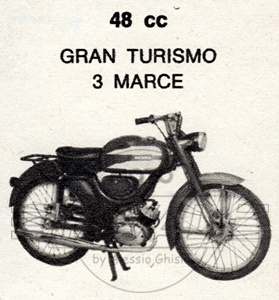

MODELLO 48 GRAN TURISMO
|
 |
Cliccare sulle immagini per ingrandire |
|
SCHEDA TECNICA MOTORE: Monocilindrico 2 tempi, alesaggio e corsa 38 x 42 mm Cilindrata effettiva 47,6 cc, potenza effettiva 1,5 CV a 5000 giri, rapporto di compressione 7:1 Numero rapporti cambio 3 Carburatore Dell'Orto T4 12 S1 Accensione a volano magnete TELAIO Forcella anteriore telescopica Sospensione posteriore a forcellone oscillante con ammortizzatore idraulico Ruota anteriore: 2,25 x 19 Ruota posteriore: 2,25 x 19 (Cerchi 1,2 x 19) Consumo norme CUNA 1,7 litri/100 km
|
L'angolo del conservato |